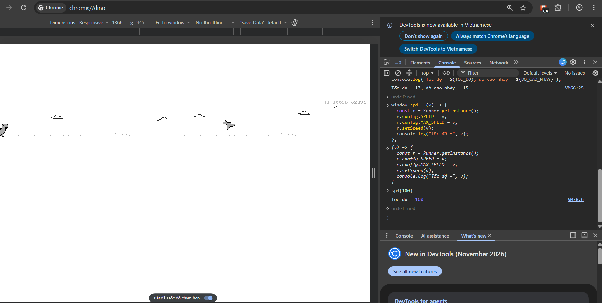
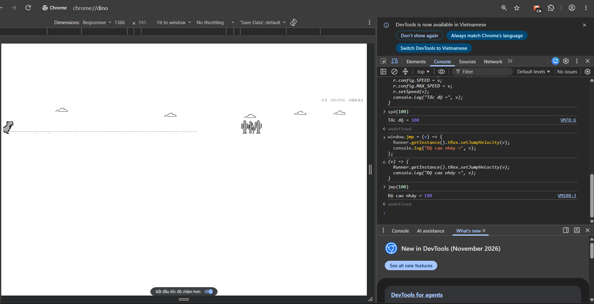

Nội dung học hôm nay
Hai mảng kiến thức chính của buổi 5.
1. Responsive web design
Responsive web design là cách xây dựng một trang web duy nhất nhưng tự điều chỉnh bố cục theo kích thước và loại thiết bị hiển thị. Các kỹ thuật được học:
- Thẻ meta viewport (
width=device-width, initial-scale=1.0): yêu cầu trình duyệt trên điện thoại dùng đúng chiều rộng thiết bị thay vì thu nhỏ cả trang. - Media query (
@media): áp dụng CSS có điều kiện theo chiều rộng màn hình (max-width,min-width) hoặc theo loại thiết bị xuất (print). - Bố cục phần trăm: dùng
floatvà chiều rộng theo %, rồi chuyển các khối về 100% khi màn hình hẹp để xếp chồng theo chiều dọc. - Ảnh thích ứng với
<picture>và<source media="…">: tải ảnh khác nhau tùy chiều rộng khung nhìn, có<img>làm phương án mặc định.
2. JavaScript trên Console của trình duyệt
Vận dụng JavaScript vào một đối tượng đang chạy thật là trò chơi khủng long của Chrome (chrome://dino): truy cập đối tượng Runner qua Console, ghi đè phương thức và thay đổi các thông số cấu hình (tốc độ, lực nhảy). Nội dung này củng cố kiến thức về đối tượng, hàm, this và công cụ gỡ lỗi đã học ở Buổi 4.
Bài 1 – Thay đổi code khủng long Chrome
Mở chrome://dino, nhấn F12, chọn tab Console rồi dán các đoạn mã bên dưới theo thứ tự.
1.1 Làm khủng long bất tử
Ghi đè phương thức gameOver của đối tượng Runner bằng hàm rỗng, trò chơi không còn kết thúc khi va chạm.
const runner = Runner.getInstance();
if (!window._gameOverGoc) window._gameOverGoc = runner.gameOver; // lưu bản gốc
runner.gameOver = function () {};1.2 Thay đổi tốc độ
Đặt cả tốc độ khởi đầu và tốc độ tối đa để giá trị không bị đặt lại khi chơi lại.
window.spd = (v) => {
const r = Runner.getInstance();
r.config.SPEED = v;
r.config.MAX_SPEED = v;
r.setSpeed(v);
console.log("Tốc độ =", v);
};
spd(13); // đổi tốc độ bất kỳ lúc nào1.3 Thay đổi độ cao nhảy
window.jmp = (v) => {
Runner.getInstance().tRex.setJumpVelocity(v);
console.log("Độ cao nhảy =", v);
};
jmp(15); // mặc định là 10
spd(100): tốc độ cuộn tăng mạnh.
jmp(100): lực nhảy được nâng lên.Bài 2 – Layout responsive hai khối
Làm tuần tự trong cùng một file: 2.1 tạo hai khối theo bài giảng, 2.2 thêm logo UEH, CTD, BIT.
Bài 2.1 và 2.2 – Hai khối responsive có logo
Hai khối LEFT (70%) và RIGHT (30%) thay đổi theo chiều rộng màn hình; khối LEFT chứa logo thích ứng bằng thẻ <picture>.
2.1 Tạo hai khối responsive
Lấy mã tạo hai khối từ bài giảng (LEFT nền xanh, RIGHT nền đỏ, float và chiều rộng theo %), kèm thẻ meta viewport và các media query.
| Điều kiện | Kết quả hiển thị |
|---|---|
| Chiều rộng > 768px | LEFT chiếm 70%, RIGHT chiếm 30%, nằm cạnh nhau. |
max-width: 768px | Cả hai khối rộng 100%, xếp chồng theo chiều dọc. |
| Từ 321px đến 479px | Ẩn cả LEFT và RIGHT. |
@media print (chế độ in) | Ẩn LEFT, RIGHT rộng 100%. |
2.2 Thêm logo UEH, CTD, BIT
Trong khối LEFT, thẻ <picture> chọn logo theo chiều rộng khung nhìn: từ 800px trở lên dùng logo UEH, từ 600px dùng logo CTD, còn lại dùng logo BIT ở thẻ <img>.
Cách kiểm tra: mở trang, nhấn F12, bật chế độ thiết bị (Ctrl + Shift + M) rồi kéo thay đổi chiều rộng; dùng Ctrl + P để xem bản in.